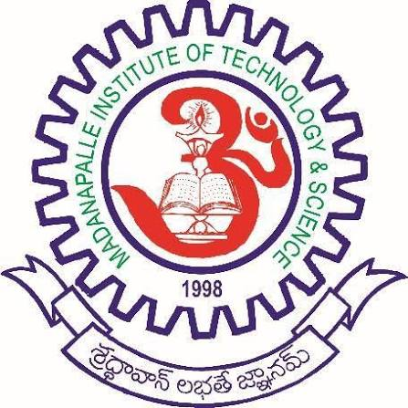
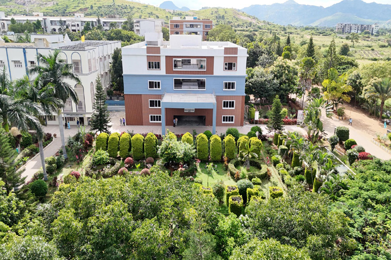
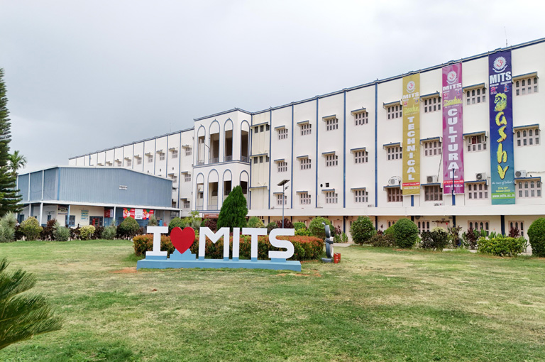
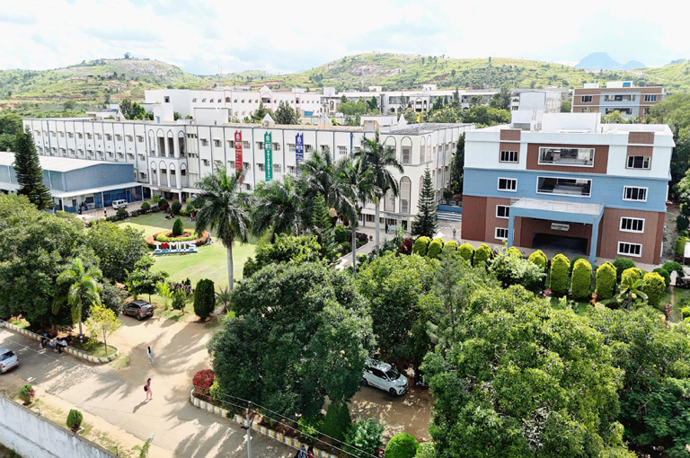
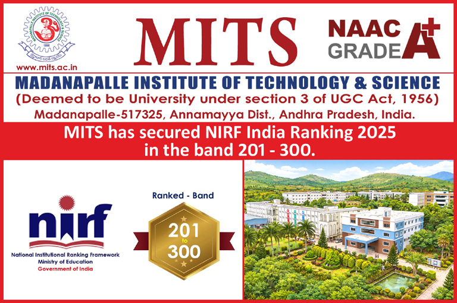
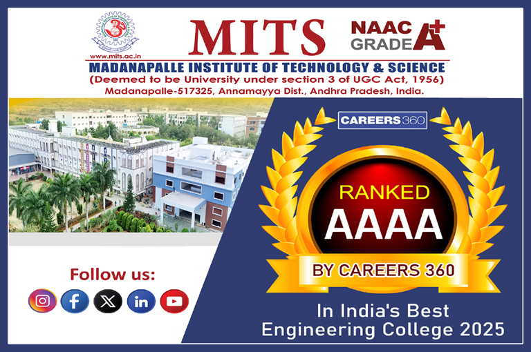

|
 |
MADANAPALLE INSTITUTE OF TECHNOLOGY & SCIENCEAbout Our College |



MITS - Deemed to be University is now governed by the visionary and proactive leadership of Dr. N. Vijaya Bhaskar Choudary, the founder and Chancellor. Redefining the education in the international standard, MITS Deemed to be University, now continues to strive with a total commitment and dedication to establish the institution as one of the foremost centers of academic excellence in India. With well-defined strategies and action plans that align with the evolving needs of the globe, MITS Deemed to be University has set forth its educational Odyssey. Madanapalle Institute of Technology & Science (MITS) was established in 1998 in the scenic and serene surroundings of Madanapalle. The institute is ideally situated on a spacious 26.17-acre campus in the Madanapalle–Anantapur Highway (NH-42), near Angallu, approximately 10 km from Madanapalle. MITS was founded under the Ratakonda Ranga Reddy Educational Academy, under the leadership of Late Sri N. Krishna Kumar, M.S. (U.S.A.), the then President, and Dr. N. Vijaya Bhaskar Choudary, Ph.D. the visionary leader of the Academy. With 27 years of academic excellence, MITS has earned NAAC A+ accreditation and NBA recognition for its programs. In recognition of its quality standards and contributions to higher education, the Government of India has conferred MITS the status of a Deemed to be University under Section 3 of the UGC Act, 1956. vide Notification No. 9-1/2025-U.3(A) dated 15th July, 2025.
To serve our region, nation and world through academic excellence, research relevance, and community engagement while emphasizing the importance of the individuals.
The MITS Deemed to be University is committed to providing a dynamic and inclusive learning environment that nurtures intellectual curiosity, promotes critical thinking, and cultivates ethical leadership. Our mission is to empower students with the knowledge, skills, and values necessary to thrive in a rapidly changing global society.

